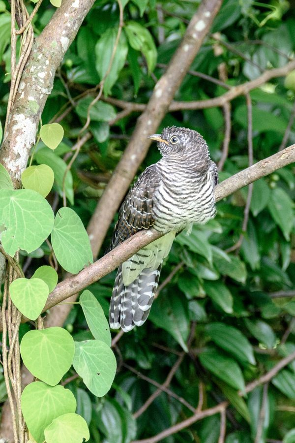

इंडियन कुक्कूIndian Cuckoo
Cuculus micropterus · Cuculidae · BRD-0151

- Scientific name वैज्ञानिक नाम
- Cuculus micropterus (Gould, 1837)
- Family कुल
- Cuculidae
- Hindi हिंदी
- इंडियन कुक्कू
- Local names स्थानीय नाम
- indian cuckoo, cuckoo, kuku, indian kukku
- Status here यहाँ की स्थिति
- native
- Movement आवागमन
- Summer visitor
- IUCN IUCN
- LC
- Review समीक्षा
- audited and independently read
When to look कब देखें
Summer visitor ग्रीष्मकालीन प्रवासी. Expected mainly in April, May, June, July, August, September, October. मुख्यतः अप्रैल, मई, जून, जुलाई, अगस्त, सितंबर, अक्टूबर में अपेक्षित।
Arrives in April–May from wintering grounds in southern India and Sri Lanka; departs by September–October. Ali & Ripley (1968) document spring arrival across India; Eastern Himalayas receive breeding populations. All migrants and visitors →
Uses and possibilities उपयोग और संभावनाएँ
Drawn from the documented uses in the profile below, where each is labelled traditional, current or a research lead. All uses →
Tell it apart from इनसे अलग पहचानें
इंडियन कुक्कू / Indian Cuckoo
Cuculus micropterus (Gould, 1837) — Cuculidae
इंडियन कुक्कू — यह छोटी गर्मियों की कोयल अप्रैल में पूर्वी उत्तर प्रदेश के जंगलों में आती है। नर की काली चोंच और भूरा रंग, और मादा की पीली आँखें इसे पहचान देती हैं। यह एक परजीवी चिड़िया है जो अपने अंडे दूसरी चिड़ियों के घोंसलों में देती है। इसकी तीव्र, उदास गान "कु-कु-कु" या "कोकिल" गर्मियों की बहुत प्रसिद्ध आवाज़ है।
Quick Identification त्वरित पहचान
| Feature | Description |
|---|---|
| Male | Dark grey to dark brown; almost black on head |
| Male bill and eye | Black bill; dark eye; eye-ring greenish-yellow |
| Female | Brown to rufous-brown; heavily barred below; yellow eye |
| Female bill and eye | Black bill; prominent yellow eye; striking |
| Underparts | Male greyish; female heavily barred |
| Size | Small cuckoo; 23–26 cm long |
| Behaviour | Skulking; stays hidden in foliage; vocal |
| Call | Distinctive kook-kook-kook or koo-koo-koo |
Field tip: In open forest and sal forest in summer, look for a small, dark cuckoo calling from hidden perches. The loud, distinctive call is often the first indication of presence, heard repeatedly especially in early morning and late afternoon. Males are dark and cryptic; females are browner and more visible. The call is diagnostic.
हिंदी — कैसे पहचानें:
नर काला-भूरा, छुपा हुआ।
मादा भूरी, धारीदार।
तेजी से "कु-कु-कु" गान।
पत्तियों में छिपी रहती है।
Morphology आकारिकी
Biometrics:
| Measurement | Range |
|---|---|
| Total length | 230–260 mm |
| Wing (flattened chord) | 120–137 mm |
| Tail | 95–115 mm |
| Bill | 15–18 mm |
| Tarsus | 14–16 mm |
| Weight | 28–40 g |
Size: 23–26 cm long; wingspan 38–42 cm. Weight 28–40 g. A small cuckoo.
Male plumage: Dark grey to dark brown overall. Crown darker, almost black. Upperparts dark. Throat and breast dark grey. Belly and underparts paler grey or white with fine dark barring. Wings and tail dark brown.
Female plumage: Brown to rufous-brown overall, brighter than male. Upperparts brown with rufous tones. Underparts heavily barred with dark brown and buff. Head often showing darker cap. Rump rufous. More colourful and variable than male.
Eyes and orbital region: Male dark eye with greenish-yellow eye-ring. Female striking yellow eye with yellow orbital skin.
Bill: Black, pointed.
Legs and feet: Dark grey to black.
Sexual dimorphism: Strong. Males dark and grey; females brown and heavily barred.
Juveniles: Resemble females; duller overall.
Vocalisations. Call repertoire:
- Song: Distinctive loud kook-kook-kook or koo-koo-koo, monotonous and repetitive.; males vocal especially at dawn and dusk.
- Call: The loud song is the primary vocalization; no other distinct calls.
- Alarm call: Similar call note.
हिंदी: नर की विशिष्ट "कु-कु-कु" गान। कभी-कभी "कोकिल" सुनाई देता है। गर्मियों में पूरे दिन गाता है, विशेषकर सुबह-शाम।
Behaviour & Ecology व्यवहार और पारिस्थितिकी
Brood parasite: Indian Cuckoo is an obligate brood parasite, laying eggs in the nests of other birds. It feeds on:
- Insects (particularly hairy caterpillars)
- Small invertebrates
- Occasionally small fruits and berries
Host species: Uses various small bird species as hosts, including warblers, babblers, and flycatchers.
Egg-laying behaviour: Female searches for suitable host nests; lays single egg in host nest; does not raise its own young.
Chick behaviour: Cuckoo chick typically ejects host eggs or nestlings; receives all food from host parents.
Social behaviour: Solitary, except during breeding when males are highly vocal and territorial.
Habitat preference: Open deciduous and sal forest, forest edge, cultivation margins with scattered trees. Prefers areas with suitable host species.
Skulking behaviour: Stays hidden in foliage; difficult to see despite loud calls.
Predators: Small raptors, snakes, monitor lizards may take individual birds or eggs.
हिंदी: घोंसले नहीं बनाती; अपने अंडे दूसरी चिड़ियों के घोंसलों में देती है। छुपी रहती है। पूरे दिन तेजी से गाती है।
Life Cycle / Phenology जीवन चक्र
Summer visitor: Absent during winter months (November–March); returns to eastern UP from April and remains through September–October.
Arrival and departure: First birds arrive in late March–April; peak in May–June during breeding; departure begins in August–September, with most birds gone by October.
Breeding (in region): Lays eggs in host nests April–July. Eggs incubate for ~11 days; chicks fledge ~21 days after hatching.
Moult: Complete moult occurs before migration to wintering grounds.
Roosts: Roosting in dense foliage; solitary.
हिंदी: अप्रैल में आता है, सितंबर तक रहता है। अपने घोंसले नहीं बनाता। दक्षिण भारत में सर्दी बिताता है।
Host Plants or Prey आहार
| Food Type | Examples | Feeding Behaviour |
|---|---|---|
| Hairy caterpillars | Various lepidopteran larvae | Glean from vegetation |
| Insects | Beetles, grasshoppers, crickets | Pick from foliage and ground |
| Small invertebrates | Spiders, insect pupae | Glean opportunistically |
| Small fruits | Berries and small fruits | Eat occasionally, especially late summer |
हिंदी: मुख्यतः बालों वाली तितलियाँ खाता है। अन्य कीड़े भी खोजता है। कभी-कभी फल भी खाता है।
Predators / Natural Enemies शत्रु
- Avian predators: Raptors, larger birds, crows
- Host egg rejection: Some host species reject cuckoo eggs or nest parasitism attempts
- Parasites: Blood parasites, internal helminths
हिंदी: बड़ी बाजें शिकार कर सकती हैं। कुछ चिड़ियाँ इसके अंडे को नीचे फेंक देती हैं।
Agricultural / Human Relevance कृषि प्रासंगिकता
Protected species: All wild birds in India are protected under the Wildlife (Protection) Act 1972 (Schedule IV, amended 2022). Hunting is prohibited.
Pest control benefit: Consumes large numbers of hairy caterpillars and other insects, providing pest control benefit in agriculture and forests.
Cultural relevance: The call is iconic in Indian literature, poetry, and culture. Known as "कोकिल" in Hindi. Mentioned in classical Sanskrit literature (Kalidasa's Meghaduta references the cuckoo's call as a sign of season).
Scientific value: Brood parasitism is of significant scientific interest; host-parasite relationships important for understanding bird ecology and evolution.
हिंदी: वन्यजीव संरक्षण अधिनियम 1972 के अनुसूची IV के अंतर्गत पूरी तरह संरक्षित है। इसका शिकार निषिद्ध है।
Expected Locally स्थानीय रूप से अपेक्षित
Not a field record. Written from published accounts for eastern Uttar Pradesh. No confirmed local sighting yet — if you have seen it, that is what the atlas needs.
अभी तक स्थानीय पुष्टि नहीं। यह विवरण प्रकाशित स्रोतों से है, किसी अवलोकन से नहीं।
Summer range: Expected in eastern Uttar Pradesh from April to October, particularly in open deciduous and sal forest areas of Basti and Ayodhya districts. Published handbooks document this species as a breeding summer visitor across northern and central India.
Habitat preference: Open deciduous forest, sal forest, forest edge, cultivation margins with scattered trees.
Peak occurrence: May–July during breeding season when vocal activity is highest.
Nearest published record: Handbook of the Birds of India documents this species as breeding in suitable forest habitats across northern and central India. Its distinctive call makes it conspicuous in suitable habitat.
What a first record would be: A dated photograph or sound recording showing the bird clearly in a specific location (with GPS coordinates and date), or the distinctive kook-kook-kook call recorded, submitted through the About page.
हिंदी: यह पक्षी स्थानीय रूप से अपेक्षित है, न कि देखे गए बतौर प्रेक्षण। अप्रैल से सितंबर तक जंगलों में देखे जाने चाहिए। पहला रिकॉर्ड के लिए स्पष्ट फोटोग्राफ या "कु-कु-कु" गान की रिकॉर्डिंग चाहिए।
Distribution वितरण
Global range: Breeding range across much of the Indian subcontinent and into Southeast Asia. Winters in peninsular India and Sri Lanka. Migratory throughout most of range.
In India: Breeds across northern and central India and the Himalayas; many birds winter in southern India and Sri Lanka.
In Uttar Pradesh: Breeds in suitable forest habitat throughout the state, particularly in eastern districts.
In Basti district / eastern UP: Expected breeding visitor in open deciduous and sal forest areas; range grounds based on suitable habitat and host species availability rather than confirmed in local surveys.
Research Questions शोध प्रश्न
- What are the specific host species used by Indian Cuckoo in eastern UP, and do they vary by habitat?
- How do host species recognize and reject cuckoo eggs or parasitism attempts, and what is the success rate of parasitism?
- What is the population size of breeding Indian Cuckoo in eastern UP, and is it stable or changing?
- क्या कीटनाशकों के उपयोग से इस चिड़िया के शिकार (विशेषकर बालों वाली तितलियों) में बदलाव हुआ है?
- How do cuckoo chicks outcompete or eliminate host chicks, and what advantages do they have? (A child could observe a host nest with cuckoo chick and document the rearing process.)
- क्या इस चिड़िया के आने-जाने के समय में जलवायु परिवर्तन का असर दिख रहा है?
Similar Species मिलती-जुलती प्रजातियाँ
| Species | Key Difference | Hindi | Field Rule | |
|---|---|---|---|---|
| [[common_hawk_cuckoo\ | Common Hawk-Cuckoo]] (Hierococcyx varius) | Rufous morph shows barred underparts like female; but larger; different call | साधारण बाज-कोयल | Hawk-Cuckoo is larger (30 cm); Indian Cuckoo is smaller (23–26 cm). |
| [[asian_koel\ | Asian Koel]] (Eudynamys scolopaceus) | Larger (42–46 cm); males glossy black with green bill; females heavily barred; different hosts | एशियाई कोयल | Asian Koel is much larger and uses crow hosts; Indian Cuckoo is smaller and uses warbler hosts. |
| Banded Bay Cuckoo (Cacomantis sonneratii) | Even smaller; different coloration; uses different hosts | बंधी खाड़ी कोयल | Banded Bay is smaller and more rufous; found in different habitat and elevation. |
Field rule: Indian Cuckoo is identified by its distinctive loud kook-kook-kook call, small size (23–26 cm), dark male and barred brown female. If the bird is larger (30+ cm) with a glossy black male, it is likely an Asian Koel or Hawk-Cuckoo.
Taxonomy & Classification वर्गीकरण
Original description. The species was described by John Gould in 1837 based on Indian specimens.
Subspecies. Monotypic; C. m. micropterus is the only recognized subspecies.
Family and order placement. Order Cuculiformes; family Cuculidae (cuckoos). The genus Cuculus contains several small Old World cuckoos.
Phylogenetic notes. Molecular work has placed Cuculus cuckoos within a clade of Old World brood parasites.
IUCN status rationale. Assessed as Least Concern (LC) globally. Populations are stable across a wide range. The species' reliance on host availability and breeding habitat may be a concern in heavily deforested areas. In India, it is protected under the Wildlife (Protection) Act 1972 (Schedule IV).
हिंदी: यह मुख्यतः भारत और एशिया में पाया जाता है। पूरी तरह सुरक्षित है। जंगलों की सुरक्षा इसके लिए जरूरी है।
Photo Gallery फोटो गैलरी
No photos yet — add field photos to media/species/indian_cuckoo/ and run node scripts/sync_photos.js.
Wanted photos:
- Male dark-grey cuckoo (though cryptic)
- Female brown cuckoo showing barred underparts and yellow eye
- Close-up of head showing eye color and bill
- In typical forest habitat
- Sound recording of distinctive call
- Singing perch showing behavior
References संदर्भ
- Gould, J. (1837). Proceedings of the Zoological Society of London 5: 145.
- Ali, S. & Ripley, S. D. (1968). Handbook of the Birds of India and Pakistan. Vol. 4 (Waxwings to Whydahs). Oxford University Press, Delhi. Pp. 351–353.
- Cramp, S. & Perrins, C. M. (1985). Handbook of the Birds of Europe, the Middle East and North Africa: The Birds of the Western Palearctic. Vol. 4 (Terns to Woodpeckers). Oxford University Press. Pp. 508–512.
- Grimmett, R., Inskipp, C. & Inskipp, T. (2011). Birds of the Indian Subcontinent (2nd edn). Oxford University Press, Delhi. P. 288.
- GBIF Occurrence Data — Cuculus micropterus, India.
- IUCN Red List (2023). Cuculus micropterus — BirdLife International assessment. IUCN, Cambridge. Status: Least Concern.
Source file: species/fauna/birds/indian_cuckoo.md